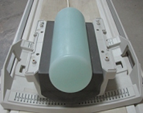
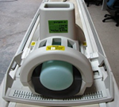

- 00000018WIA3026DE20GYZ
- id_131071563.4
- Oct 20, 2022 2:44:05 PM
HD T/R Quad Extremity Coil SNR Test
Prerequisites
| Required persons | Preliminary requirements | Procedure | Finalization |
|---|---|---|---|
| 1 | Not Applicable | 15 minutes | Not Applicable |
| Item | Quantity | Effectivity | Part number | Manufacturer |
|---|---|---|---|---|
| T/R Quad Extremity Coil Phantom Positioner | 1 | - |
5147225-7 | - |
| 1.5T Large Cylindrical Unified Phantom | 1 | Unified Phantom Set |
5342679 | - |
| Condition | Reference | Effectivity |
|---|---|---|
|
The following must be present on the system: Coil: HD T/R Knee/Foot Coil by Invivo. Configuration: GE_HDX QUADKNEE. | - | - |
About this task
Follow this process to prepare for the SNR test using the Invivo 1.5T HDT/R Quad Extremity Coil, M3335ME, curved base.
Coil Imaging Performance Verification
About this task
The GE HD T/R Quad Extremity Coil has one coil name: HD T/R Knee/Foot Coil by Invivo, and can be used in the QUADANKLE, QUADFOOT or QUADKNEE mode. The image quality check uses two different protocols for signal and noise image acquisition:
-
Signal scan is an FSE sequence used to minimize susceptibility and B0 inhomogeneity effects. The signal scan must be run prior to the noise scan since the R1, R2, and TG values from the signal scan are used for the noise scan.
-
Noise scan is a GRE sequence that has a Control Variable (do_noise) to eliminate the Transmit RF completely during the scan.
The Data Sheet in the Finalization section at the end of this procedure explains the data required to calculate the individual element Signal-to-Noise Ration (SNR).
Unified Phantom Setup
Procedure
- Place the baseplate of the coil on the patient table as shown.
Figure 1. Baseplate of Coil on Patient Table 
Place the large Cylindrical Unified Phantom in the phantom positioner.Notice 
Figure 4. Phantom Placed in Positioner 
- Attach the anterior portion of the coil to the baseplate, and
lock the coil.
Figure 5. Anterior Portion of Coil Attached to Baseplate 
Figure 6. Coil Lock 
Signal Scan
Procedure
- At the magnet, press the Alignment Light button to turn on the light.
- Move the table to align the coil to the alignment lights as shown using the alignment markings on the coil in front of the chimney.
- Press the Landmark button to landmark
the alignment.
Figure 7. Coil Alignment 
Noise Scan
About this task
A signal scan must be run prior to the noise scan as the same R1, R2 and TG values must be used for both of these scans. Do not run an Auto Prescan prior to the noise scan as the values will be changed.
Procedure
- Copy the signal scan series. Select Copy Series, right mouse click and Paste Series in Rx Manager.
- Click View Edit and set the protocols per the Noise column in Signal and Noise Protocols.
- Select Save Series and Prepare to Scan.
- Open the Display CVs menu under Research Operations. Set the rhformat and do_noise CVs to 1.
- Run Manual Prescan, and do not make any changes. Verify that R1, R2, TG and Bandwidth did not change from the previously completed signal scan, and select Done.
- Run Scan.
SNR Measurement
About this task
A circular Region of Interest (ROI) should be used for the signal measurements, and a rectangular ROI should be used for the noise measurements. The actual ROIs should be similar in shape and size to those shown below.

Procedure
- Calculate and record the values for mean signal, standard deviation
of noise, and SNR in the Data Sheet found in the next section.Note
The SNR calculation uses the Mean of the signal image and Standard Deviation of the noise image.
Figure 9. SNR Calculation 
The SNR measurements must be greater than or equal to the following specifications:
Table 5. SNR Specifications SNR (1.5T) SNR (3.0T) 200 Legacy Phantom 410 Unified Phantom 207
Finalization
Finalization
The Data Sheet to record the calculated SNR ratio data obtained in this procedure can be found in this file: 538814.pdf.